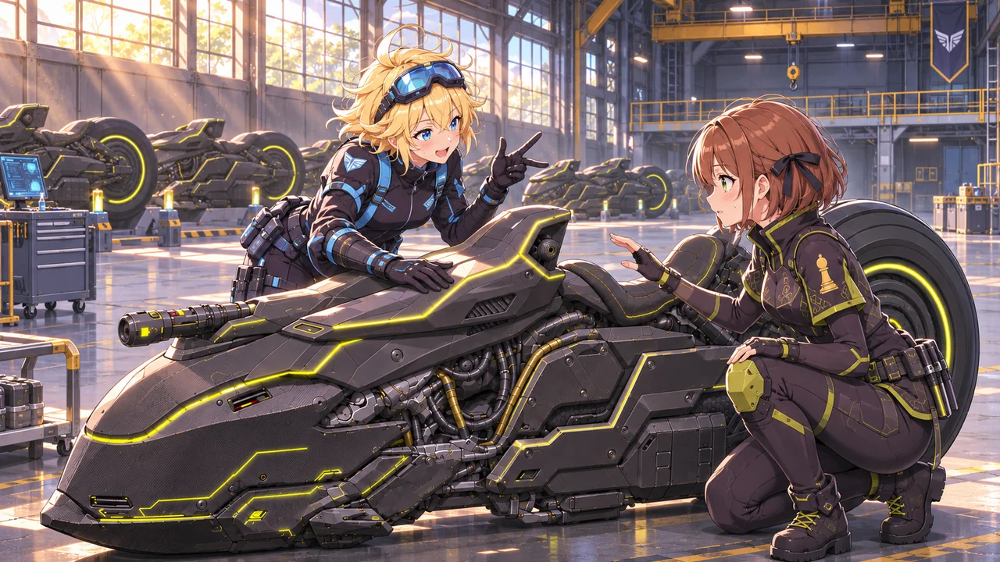
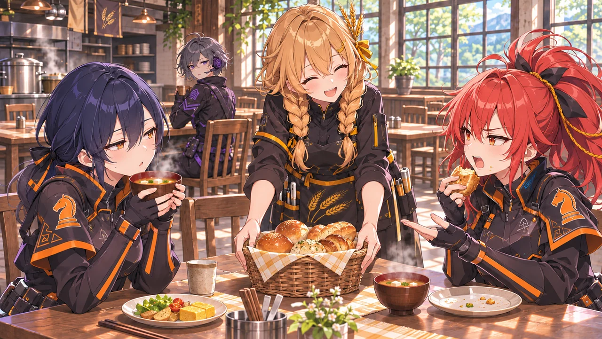

STORY
戦いのそばに、
隊員たちの日常。
『戦姫将棋』と同じ世界で、
「禍」に立ち向かう、別の物語。
『討禍姫隊』は、寝る前に思い描いていたオリジナル小説から生まれた作品です。その一部を、アニメのオープニングのようなミュージックビデオにしました。
任務に向かう姿だけでなく、格納庫で過ごす朝や、仲間と囲む昼食も。隊員たちのいる世界を、絵と映像、そして遊べる形へと広げています。

格納庫の朝
機体のそばで交わす、仲間との言葉。

みんなで囲む昼食
任務の合間にも、それぞれの時間が流れる。
掲載イラストは作品イメージです。ゲーム画面ではありません。